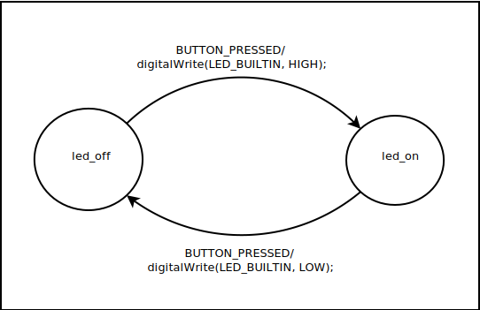

The first example is an extremly simple state machine with only two states and a single event. Connect a push button switch between D2 of the processor board and ground. When the button is pressed the on-board LED will turn on. When it is pressed again the LED will turn off.
In the state diagram the states are represented as circles and the transitions are arrows connecting the circles. By convention state name are given in lower case and events are all upper case. The code given after the event name is executed when ever the state transition is made.
The header portion of the description file specifies code to be included at the top of the output .h file along with options defining the state machine
%{
#include <Arduino.h>
%}
%event BUTTON_PRESSED
%state led_on led_off
%class Led1Sm
%start led_off
The code block at the start of the header section should be the first thing in the section. This block is copied verbatum to the begining of the output .h file. In the example we are including Arduino.h for the definition of the digitalWrite() function. The option %event is required and list all of the events. Multiple %event options can be specified adding additional events. The %state option is also required listing all of the states. Like the %event option it can occure multiple times in the header section. The %class option is optional and give the class name for the generated class. The output header and code file name will be generated by appending .h and .cpp to the class name. If the %class option is omitted the class name will be the same as the input file name with any file name extensions removed. The optional %start gives the initial state for the state machine. If no start state is specified the first state given in the rules section will be used as the start state.
The next section defines the state transitions and attaches user code to the transitions.
%%
led_on
{
BUTTON_PRESSED led_off
%{
digitalWrite(LED_BUILTIN, LOW);
%} ;
}
led_off
{
BUTTON_PRESSED led_on
%{
digitalWrite(LED_BUILTIN, HIGH);
%} ;
}